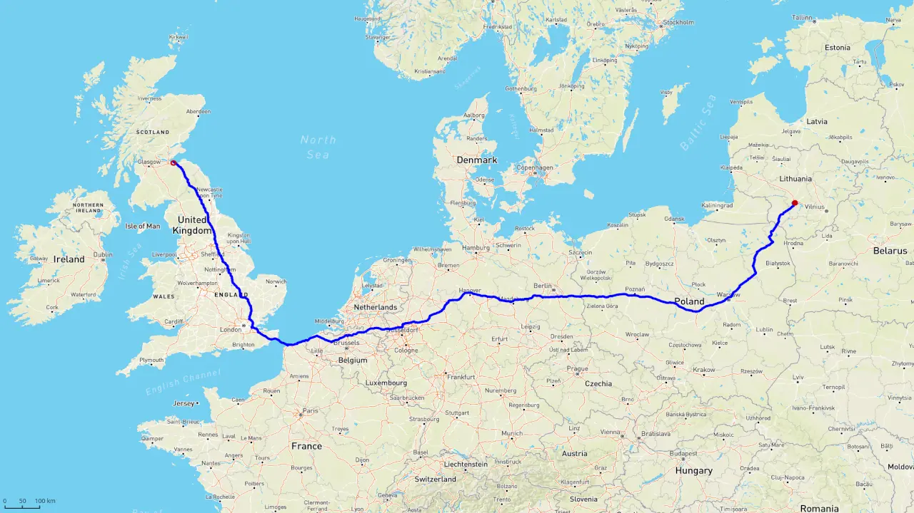

Passenger, luggage, parcel, small cargo, vehicle, motorcycle, appliance, furniture, pet transportation. We travel through Lithuania, Poland, Germany, Netherlands, Belgium, France to England. From Calais to Dover. All the way to Scotland. And we can make stops along the way.
UK : +44-799-9909-093
LT : +370-689-30300
We offer travel services from Lithuania to the UK and other countries mentioned above. Choosing us is a quick and inexpensive way to travel. We leave every week and we have plenty of space for your luggage. The journey length depends on weather and road conditions, traffic and customs delays. Our vehicles meet the Euro NCAP safety and EURO4 emission requirements. Our vehicles are fitted with comfortable, fully reclining seats, air conditioning and DVD entertainment system. Our flexible schedule guarantees inexpensive prices and quick deliveries. Our regular clients make use of our discount system. For more information please contact us.
We make personal deliveries between Lithuania and the UK and other locations en route. We leave every week. It is against our company policy to transport tobacco, narcotics, alcohol, explosives, cash, personal documents, jewelry. For more information please contact us.
Automobile and motorcycle transport between the United Kingdom - Lithuania and vice versa, as well as other countries mentioned above. We will also transport, damaged and inoperable vehicles. If you purchased a vehicle, we can safely deliver it to you on time. For more information please contact us.
Your pet is our dearest friend. For the entirety of the journey we will take care of all your pet's needs. Your pet will be well fed and will have ample access to water. We understand how stressful it is for animals to travel in an unfamiliar environment. Thus we will take your pet for a walk in fresh air and if it is safe we will let him play outside under our supervision and hygiene will be taken care of. We will deliver your pet to your desired destination safely and comfortably. For more information please contact us.
